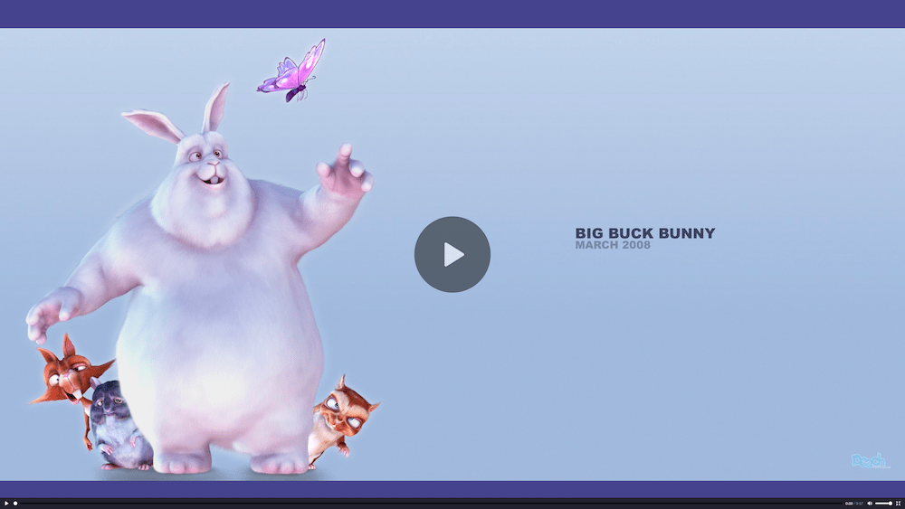

The ::backdrop CSS pseudo-element is a box the size of the {{Glossary("viewport")}} which is rendered immediately beneath any element being presented in full-screen mode. This includes both elements which have been placed in full-screen mode using the Fullscreen API and {{HTMLElement("dialog")}} elements.
When multiple elements have been placed into full-screen mode, the backdrop is drawn immediately beneath the frontmost such element, and on top of the older full-screen elements.
/* Backdrop is only displayed when dialog is opened with dialog.showModal() */
dialog::backdrop {
background: rgba(255,0,0,.25);
}
All full-screen elements are placed in a last-in/first out (LIFO) stack in the top layer, which is a special layer in the viewport which is always rendered last (and therefore on top) before drawing the viewport's contents to the screen. The ::backdrop pseudo-element makes it possible to obscure, style, or completely hide everything located below the element when it's the topmost one in the top layer.
::backdrop neither inherits from nor is inherited by any other elements. No restrictions are made on what properties apply to this pseudo-element.
In this example, the backdrop style used when a video is shifted to full-screen mode is configured to be a grey-blue color rather than the black it defaults to in most browsers.
video::backdrop {
background-color: #448;
}
The resulting screen looks like this:

See this example in action, after changing the color of the background cause the video to go fullscreen to see the change to the backdrop color.
| Specification | Status | Comment |
|---|---|---|
| {{SpecName('Fullscreen', '#::backdrop-pseudo-element', '::backdrop')}} | {{Spec2('Fullscreen')}} | Initial definition. |
{{Compat}}